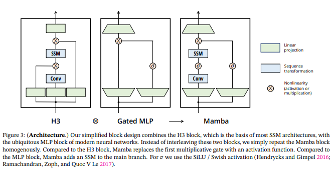

def discretize(A, B, C, step):
I = jnp.eye(A.shape[0])
BL = jla.inv(I - (step / 2.0) * A)
Ab = BL @ (I + (step / 2.0) * A)
Bb = (BL * step) @ B
return Ab, Bb, Cmodel
Basic architecture and components of mamba
Mamba Implementation in JAX Equinox
Suggest reading the following before/while reading the code: * [1] Mamba: Linear-Time Sequence Modeling with Selective State Spaces (Albert Gu and Tri Dao) https://arxiv.org/abs/2312.00752 * [2] The Annotated S4 (Sasha Rush and Sidd Karamcheti) https://srush.github.io/annotated-s4 * Inspired by https://github.com/johnma2006/mamba-minimal
Glossary: * b: batch size (B in Mamba paper [1] Algorithm 2) * l: sequence length (L in [1] Algorithm 2) * d or d_model: hidden dim * n or d_state: latent state dim (N in [1] Algorithm 2) * expand: expansion factor (E in [1] Section 3.4) * d_in or d_inner: d * expand (D in [1] Algorithm 2) * A, B, C, D: state space parameters (See any state space representation formula) (B, C are input-dependent (aka selective, a key innovation in Mamba); A, D are not) * Δ or delta: input-dependent step size * dt_rank: rank of Δ (See [1] Section 3.6 “Parameterization of ∆”)
State space models
State space models(SSMs) give a mapping from a \(1-D\) input \(u(t)\) onto an \(N-D\) latent state \(x(t)\), which is then projected down a \(1-D\) output \(y(t)\).
\[ \begin{aligned} x'(t) &= Ax(t)+ Bu(t) \\ y(t) &= Cx(t) + Du(t) \end{aligned} \] where \(A,B,C,\) and \(D\) are learnable parameters.
For simplicity lets start by omitting the \(D\) term. \(Du\) can be viewed as an easy to compute skip connection
random_SSM
random_SSM (rng, N)
To apply this SSM on a discrete sequence \((u_0,u_1,u_2,\dots)\) instead of the continous function \(u(t)\), it must be discretized with step size \(\Delta\) representing input resolution so that input \(u_k:=u(k\Delta)\)
This discretization can be performed by a bilinear transformation, mapping the state matrix \(A\) to \(\bar{A}\). \[ \begin{aligned} \bar{A} &= (I-\Delta/2 A)^{-1}(I+\Delta/2 A) \\ \bar{B} &= (I-\Delta/2 A)^{-1}\Delta B \\ \bar{C} &= C \end{aligned} \]
Given this sequence to sequence mapping, the discrete SSM can be computed like n RNN with a recurrence relation in \(x\). \[ \begin{aligned} x_{k} &= \bar{A}x_{k-1} + \bar{B}u_k \\ y_k &= \bar{C}x_k \end{aligned} \]
def scan_SSM(Ab, Bb, Cb, u, x0):
def step(x_k_1, u_k):
x_k = Ab @ x_k_1 + Bb @ u_k
y_k = Cb @ x_k
return x_k, y_k
return jax.lax.scan(step, x0, u)To run the SSM we first discretize and then iterate.
def run_SSM(A, B, C, u):
L = u.shape[0]
N = A.shape[0]
Ab, Bb, Cb = discretize(A, B, C, step=1.0 / L)
# Run recurrence
return scan_SSM(Ab, Bb, Cb, u[:, np.newaxis], np.zeros((N,)))[1]|
Model from Figure 3 of 2312.00752
class MambaBlock(eqx.Module):
args: ModelArgs
in_proj: eqx.nn.Linear
conv1d: eqx.nn.Conv
x_proj: eqx.nn.Linear
dt_proj: eqx.nn.Linear
out_proj: eqx.nn.Linear
log_A: jnp.ndarray
D: jnp.ndarray
def __init__(self, args: ModelArgs):
super().__init__()
self.args = args
self.in_proj = eqx.nn.Linear(args.d_model, args.d_inner*2, use_bias=args.bias, key = rng)
self.conv1d = eqx.nn.Conv1D(in_channels=args.d_inner,
out_channels=args.d_inner,
kernel_size=args.d_conv,
groups=args.d_inner,
use_bias= args.conv_bias,
key = rng)
# maps x to (Δ, B, C)
self.x_proj = eqx.nn.Linear(args.d_inner, args.dt_rank+args.d_state*2, use_bias=False, key = rng)
# projects Δ from dt_rank to d_in
self.dt_proj = eqx.nn.Linear(args.dt_rank, args.dt_inner, use_bias=True, key = rng)
self.out_proj = eqx.nn.Linear(args.d_inner, args.d_model, use_bias=args.bias, key = rng)
A = jnp.tile(jnp.arange(1, args.d_state + 1), (args.inner, 1))
self.log_A = jnp.log(A)
self.D = jnp.ones((args.d_inner, args.d_inner))
def forward(self, x):
"""
Mamba forward pass, looks like figure 3
(seq_len, d_model) -> (seq_len, d_model)
"""
(L,d) = x.shape
x_and_res = self.in_proj(x) # (L, d_inner*2)
(x, res) = jnp.split(x_and_res, 2, axis=-1) # (L, d_inner)
x = self.conv1d(x.T)[:,:,:, :L].T # (L, d_inner)
x = jax.nn.silu(x)
y = self.ssm(x)
y *= jax.nn.silu(res)
output = self.out_proj(y)
return output
def ssm(self, x):
"""
Run SSM
"""
(d_in, n) = self.A_log.shape
# Compute ∆ A B C D, the state space parameters.
A = -jnp.exp(self.A_log) # (d_in, n)
D = self.D
x_dbl = self.x_proj(x) # (l, d_rank+ d_state*2)
(delta, B, C) = jnp.split(x_dbl, [self.args.dt_rank, self.args.d_state,
self.args.d_state], axis=-1) # (1, d_rank), (l, d_state), (l, d_state)
delta = jax.nn.softplus(self.dt_proj(delta)) # (l, d_inner)
y = self.selective_scan(x, delta, A, B, C, D)
return y
def selective_scan(self, u, delta, A, B, C, D):
"""
Discretize and Selective scan
"""
(L, d_in) = u.shape
n = A.shape[1]
# Discretizing continouis parameters acc eq 4
deltaA = jnp.exp(jnp.einsum('ld, dn -> ldn', delta, A))
deltaB_u = jnp.einsum('ld,ln, ld->ldn', delta, B * u)
# perform selective scan
y = scan_SSM(deltaA, deltaB_u, C, u, jnp.zeros((n,)))
y += u*D
def scan_SSM(Ab, Bb, Cb, u, x0):
def step(x_k_1, u_k):
x_k = Ab @ x_k_1 + Bb @ u_k
y_k = Cb @ x_k
return x_k, y_k
return jax.lax.scan(step, x0, u)class RMSnorm(eqx.Module):
eps: float
weight: jnp.ndarray
def __init__(self, d_model: int, eps: float = 1e-5):
super().__init__()
self.eps = eps
self.weight = jnp.ones((d_model,))
def __call__(self, x):
output = x * jax.lax.rsqrt(jnp.mean(x**2, axis=-1, keepdims=True) + self.eps) * self.weight
return outputrng = jax.random.PRNGKey(0)
d_model = 10 # Choose an appropriate size for the test
# Create a random input tensor
x = jax.random.normal(rng, (5, d_model))
# Instantiate the RMSnorm module
rmsnorm_module = RMSnorm(d_model)rmsnorm_module(x)Array([[-0.28202367, -1.7751259 , -1.3276266 , 0.21005142, 0.00262558,
-1.0843129 , -1.1610469 , 0.17709939, -0.2544334 , 1.5305542 ],
[-0.24652143, -0.7815071 , 0.41000503, 0.53822225, -1.3681791 ,
-2.1942427 , -0.27373582, 1.3746103 , 0.3120011 , 0.34948558],
[-0.34938094, 0.26039216, 1.1528395 , -0.28252405, -1.6644143 ,
1.4754516 , -0.5000238 , 0.12314829, -1.2202971 , -1.3036996 ],
[ 0.81434023, 0.6395449 , 0.05811654, -0.08327827, 0.42880297,
0.22944313, -0.07316481, 1.6281995 , 2.4002602 , 0.5130036 ],
[-1.188451 , -0.14157107, 0.9150801 , 1.1505973 , -1.235271 ,
-0.4042365 , -1.7946148 , -0.13045768, -1.1099608 , -0.49715152]], dtype=float32)class ResidualBlock(eqx.Module):
def __init__(self, args: ModelArgs):
super().__init__()
self.args = args
self.mixer = MambaBlock(args)
self.norm = RMSnorm(args.d_model)
def forward(self, x):
self.mixer(self.norm(x)) + xclass Mamba(eqx.Module):
def __init__(self, args: ModelArgs):
pass
def forward(self, x):
pass
@staticmethod
def load_pretrained(pretrained_model_name: str):
pass